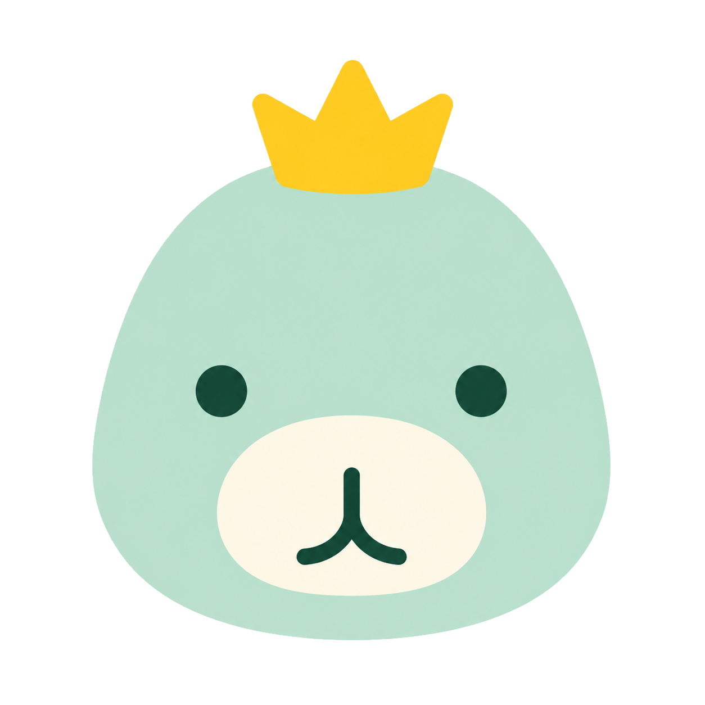

순공대장이미 공부한 자료를,
잊기 직전에 다시 풀게 만드는
AI 회독 리텐션 엔진.
공부의 양이 아니라, 기억에 남는 회독을 설계합니다.
Never forget what matters.


순공대장공부의 양이 아니라, 기억에 남는 회독을 설계합니다.
Never forget what matters.
순공대장 사업소개서 · 2026
대부분의 학습 앱은 새 강의를 더 보게 만듭니다. 순공대장은 반대입니다. 학생이 이미 공부한 흔적을 AI가 학습 객체로 바꿔, 잊기 직전에 다시 풀게 합니다.
독학재수 학원을 직접 운영하며 1년간 학생들의 공부를 옆에서 지켜봤습니다. 우리는 공부의 양(시간)을 쟀지만, 그 시간이 머릿속에 무엇을 남겼는지 — 리텐션은 아무도 측정하지 않았습니다.
그래서 순공시간을 더 쌓게 만드는 앱이 아니라, 순공시간을 값지게 만드는 앱을 만듭니다. 제품의 이름이 곧 문제의식입니다.
Karpicke & Roediger, Science (2008)
첫 화면은 대시보드가 아니라 ‘오늘의 회독길’입니다. 학생은 본인이 올린 자료에서 생성된 복습 퀘스트만 클리어하면, 잊기 직전 타이밍에 맞춰 기억이 회수됩니다.
망각 위험 기반 회독 예약
1·3·7·14일 — 잊기 직전 타이밍에 자동 예약.
오답 회수 (변형 출제)
같은 오답을 변형해 다시 풀어 ‘회수’합니다.
기억 HP (0–5)
기억 상태를 0–5 정수로 — 부담 없이 직관적으로.
XP · 스트릭 · 순공리그
매일 돌아올 이유를, 압박 없는 동반자 톤으로.
콴다는 학생이 모르는 문제를 사진으로 찍으면, AI가 풀이와 해설을 즉시 찾아주는 학습 Q&A 서비스입니다. 수천만 명의 학생이 쓰는, 한국 에듀테크를 대표하는 성공 사례입니다.
막힌 문제를 풀어준다. 학습의 입구.
푼 것을 잊기 직전에 회수시킨다. 비어 있는 다음 칸.
업로드 · AI 분석
자료를 올리면 자동으로 학습 객체화.
오늘의 회독길
오늘 할 회독 3개를 한눈에.
회독 플레이 · 오답 회수
1~2분 단위 짧은 세션으로 회수.
리텐션 대시보드 · 리포트
기억 상태와 부모·멘토 리포트.
데이터 아키텍처 — Postgres(온톨로지 트루스) + 벡터 검색(학습 객체 임베딩).
알수록 정확해지고, 정확할수록 머무르고, 머물수록 데이터가 쌓이는 복리 플라이휠.
엔진은 특정 시험에 종속되지 않습니다 — 망각이 있는 모든 고부담 시험으로 확장. (정량 데이터는 리서치 트랙 반영 예정.)
| 티어 | 핵심 (예시 가격) |
|---|---|
| Free | 일일 회독 제한 + 스트릭 |
| Super | 월 9,900 · 무제한 회독 |
| Max | 월 19,900 · AI 회독 코치·부모 리포트 |
| 가족 · B2B2C | 가족 요금 / 학원별 견적·관리형 대시보드 |
초기 가격은 검증 단계에서 조정 가능. IAP 단독이 아닌 구독 중심 하이브리드.
※ 효과 수치가 아니라, 확보 가능한 규모와 검증 채널입니다.
마케터가 에듀테크를 고른 게 아닙니다. 독학재수 현장에서 정확한 실패 지점을 1년간 관찰했고, 그것을 풀 정확한 근육을 갖고 있습니다.
| 자산 | 의미 |
|---|---|
| 게임 산업 16년 (마케팅·데이터 전략·리텐션) | 회독은 본질적으로 리텐션·게이미피케이션 문제 — 그대로 적용됩니다. |
| 글로벌 퍼포먼스 마케팅 · UA | 한국 에듀테크 대다수가 못 가진 CAC·LTV·퍼널 본능. |
| 데이터 전략 · 독학재수 직접 운영 | 운영·실험·시장을 하나의 판단 체계로 + 즉시 베타 채널. |
모든 고부담 시험에는 망각 문제가 있습니다. 우리는 각 학생이 어떻게 잊는지를 아는 AI로 그것을 풉니다.
콴다가 ‘막힘’을 풀었듯, 순공대장은 ‘까먹음’을 풉니다. 그리고 까먹음의 시장은, 이제 막 열립니다.